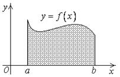
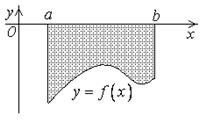
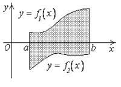
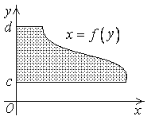
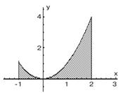
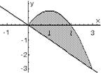
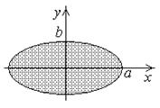

24.1.1. Вычисление площади в прямоугольных координатах
1)
Площадь
криволинейной трапеции в прямоугольных координатах. Трапеция лежит выше оси OX
.
|

|
2)
Площадь криволинейной
трапеции в прямоугольных координатах. Трапеция лежит ниже оси OX
.
|

|
3)
Площадь области
лежащей между двумя криволинейными трапециями
.
|

|
1)*
Площадь криволинейной
трапеции (относительно оси OY) в прямоугольных координатах
.
|

|
2)* и 3)* аналогичны 2) и 3).
|
Вычислить площадь фигуры, ограниченной параболой  , прямыми и
, прямыми и
 и осью абсцисс.
и осью абсцисс.
, прямыми и
и осью абсцисс.Решение:
.Используем формулу 3
.

Вычислить площадь сегмента, отсекаемого прямой от параболы .
Решение:
.
Преобразуем уравнение параболы ,
Находим абсциссы точек пересечения ( и
и
 ), имеем:
), имеем:
и
), имеем:
Вычислить площадь эллипса .
,
,
.
